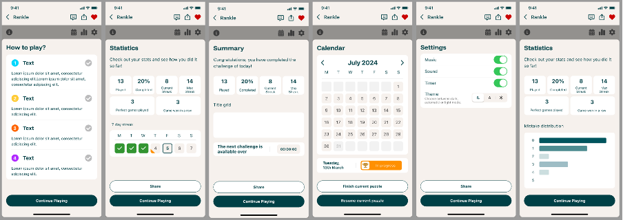
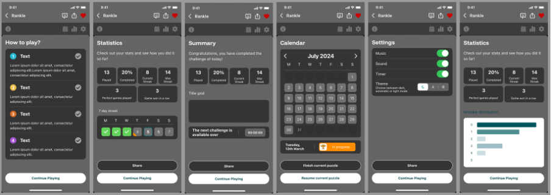
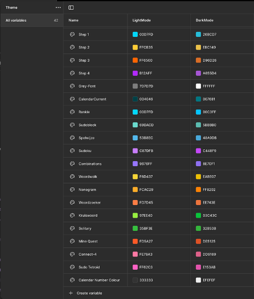
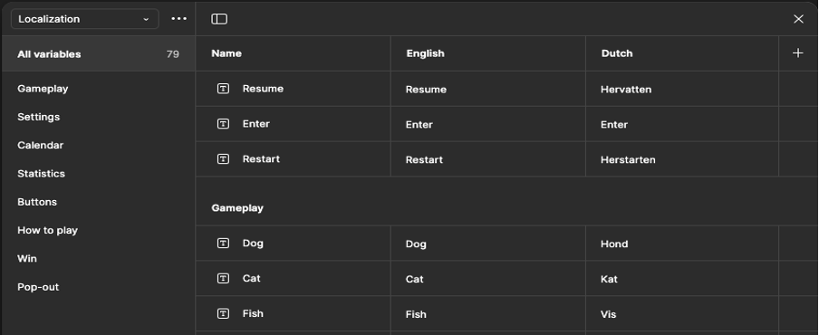
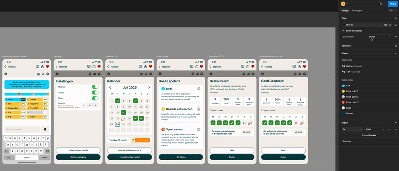
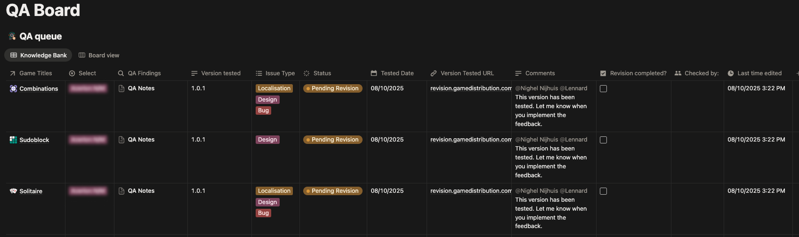

Denda Games
My role within the company
In my role within the company, I am responsible for creating both low fidelity and high fidelity designs, implementing new technologies and optimising existing systems to improve overall performance. I developed a comprehensive library system to ensure a smoother, more organised and consistent workflow in Figma, and I regularly collaborate with teams across different departments to help achieve our product goals. I also create product roadmaps to provide clear visualisations of a product’s vision and priorities, ensuring alignment across the team. In addition, I design progression systems and in game economies for various games and client products, and I support new interns by offering guidance throughout their onboarding and development.
User journey for the HTML5 games
In my role as a Game Designer, I led the creation of the new game flow for the HTML5 games we were developing for a new client. I collaborated closely with the Technical Game Producer to design a user journey that ensured easy and intuitive navigation for players. This flow was a key factor in the success of the games, as the target audience consists of people aged 35 to 65 who enjoy playing casual games within a news and media environment.
User Journey
Library of Components
Another task was to research and come up with a method that would increase the productivity of our HTML5 products, but also mantain the consistency among all the casual games. This narrowed into creating a library of components in figma with the main screens, icons and colours. By doing this, everyone in the design and art department would have access to a cohesive, and ready-to-use designes that maintains spacing and margin along the desings

Variables
Colours Variables
Since the company's product are meant to be playable in multiple environments, including websites and apps, there was a requirement that we needed to achieve, dark mode. After creating the library of components, then I proceed to create the colour variables for dark mode which needed the usage of some colour theory in order to make it readable, cohesive and clean.
  Showcasing variable

Language Variables
We have both international clients and national (Dutch) clients. For this, the best way to showcase a game to potential clients, is to do it in a language that almost everyone speaks, English. I created another variables for both English and Dutch that allows the products to be changed with one single tap/click.
Showcasing variable
Additional contribution on my role within the company
- Playtesting new ported games
- QA multiple versions of HTML5 games
- Creation of a new QA system in the company using Notion 
- Setting up a new Notion Landing page for the company
- Social Media posts
- PR